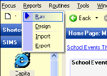
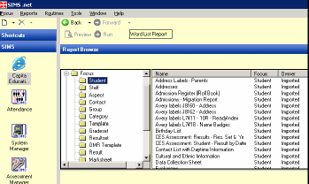
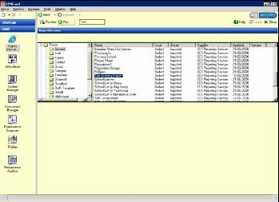
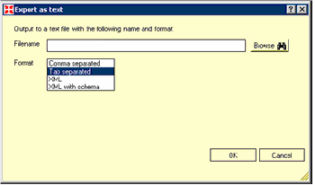
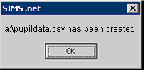

This guide explains how to export a names list from SIMS.net in CSV file format.
1. Select Reports and Run from the main menu bar.
2. In the left hand Report Browse window, expand Focus and select Student.
3. Scroll down to select Licensed Photographer Export in the list of reports and then click Run. The report will be generated for the whole school. This may take several minutes.
4. Once the report has finished running, a box (as shown below) will be displayed. Ensure the Comma Separated format is selected.
Click the Browse button and select 3 ½ Floppy (A:) from the Look in: dropdown box. Set the filename to pupildata.csv and click Open. Click OK to start the export.
5. When the report has been exported, a message will appear. Click OK and remove the Sam Learning disk from the (A:) Drive.
